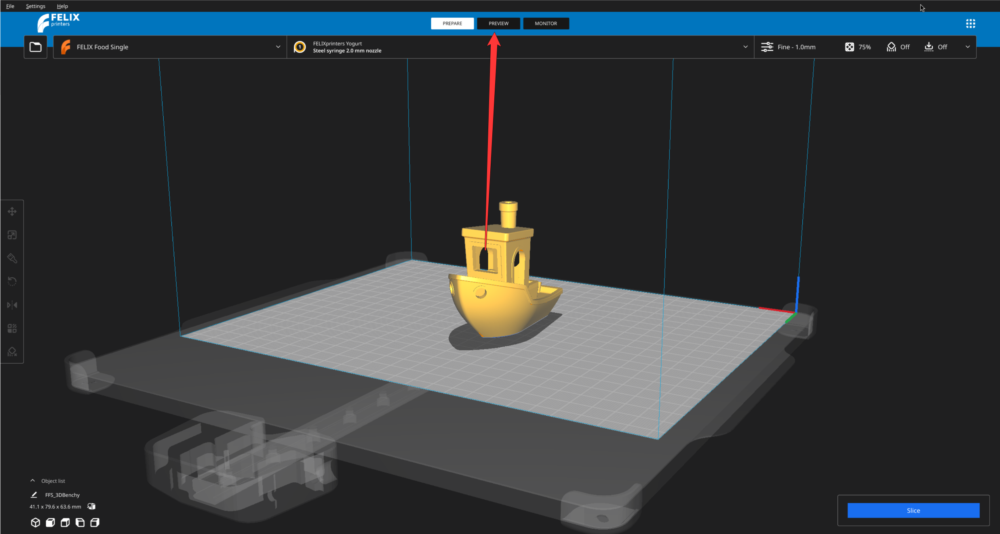
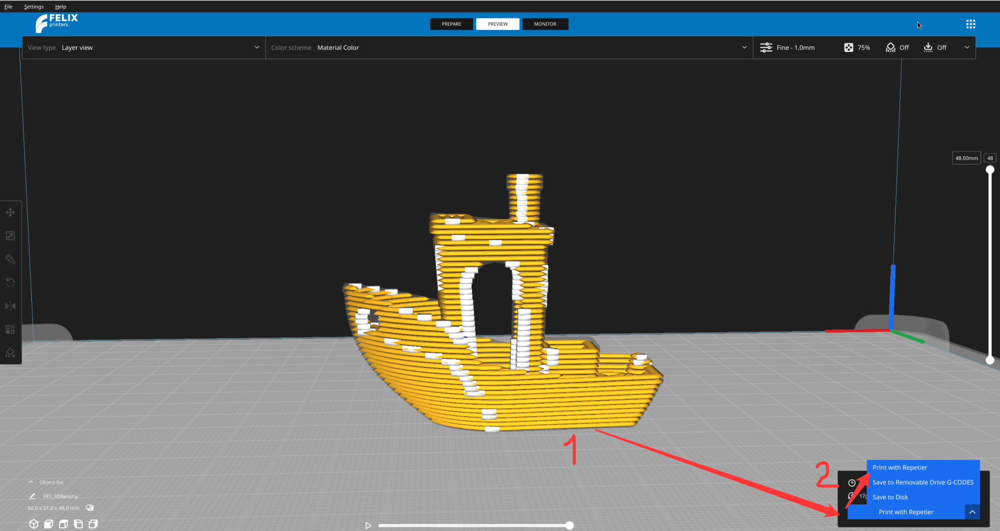
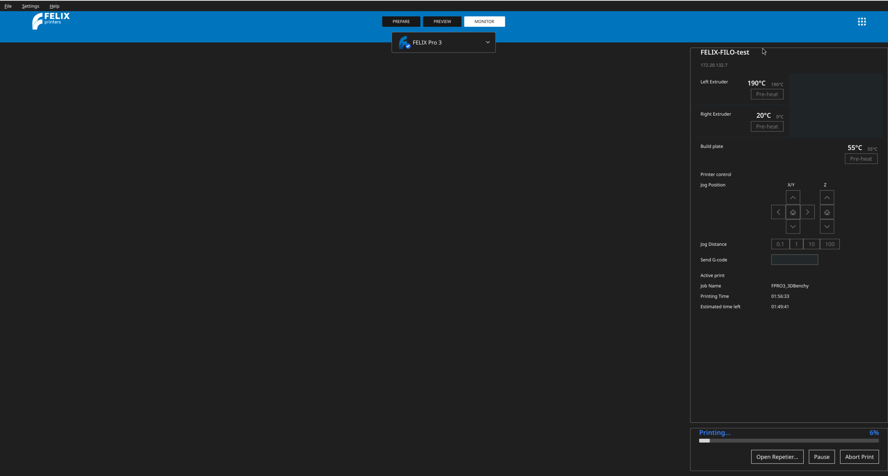

Printen vanuit de applicatie
Vereisten
Om de stappen in dit gedeelte van de documentatie te kunnen voltooien, moet u eerst een aantal andere zaken op orde hebben:
Printbestanden naar Repetier sturen
Zodra uw model klaar is om geprint te worden, navigeert u naar het Preview-menu

En bij de knop rechtsonder waarmee u normaal gesproken de G-code naar uw computer zou exporteren, selecteert u de optie Print with repetier

Wanneer u hierop klikt, wordt het model naar de wachtrij voor het printen gestuurd. Als de wachtrij leeg is, begint het printen direct.
De print monitoren
Zodra de print naar Repetier is gestuurd, wordt u doorgestuurd naar het tabblad Monitor. Hier kunt u de voortgang van de print bekijken. Als uw 3D-printer een camera heeft, ziet u hier ook een live voorbeeld van deze camera.
U kunt de print direct vanuit de applicatie pauzeren of stoppen.

FAQ
Ik zie de optie 'Print with Repetier' niet in het exportmenu
Zorg ervoor dat u zich in de Preview-modus bevindt en dat uw model al is gesliced. Controleer ook of uw printer verbonden is met Repetier — zie Externe verbinding met de printer. Als de optie nog steeds niet verschijnt, stuur dan een bugreport via het menu rechtsboven in de applicatie.
Mijn print start niet nadat ik op 'Print with Repetier' heb geklikt
Als de printwachtrij niet leeg is, wacht uw taak totdat de huidige print klaar is. Controleer het tabblad Monitor om de status van de wachtrij te zien. Als de wachtrij leeg is en de print nog steeds niet start, is dit mogelijk geen veelvoorkomend probleem — stuur een bugreport via het menu rechtsboven.
Ik word niet doorgestuurd naar het tabblad Monitor nadat ik de print heb verstuurd
Dit zou automatisch moeten gebeuren zodra de printtaak is verstuurd. Probeer handmatig naar het tabblad Monitor te navigeren. Als er geen voortgang of informatie wordt weergegeven, is dit waarschijnlijk geen veelvoorkomend probleem — stuur een bugreport via het menu rechtsboven.
Ik zie geen live camerabeeld in het tabblad Monitor
Een live voorbeeld verschijnt alleen als uw 3D-printer een camera heeft die is aangesloten en geconfigureerd. Als uw printer wel een camera heeft en het voorbeeld nog steeds niet wordt weergegeven, stuur dan een bugreport via het menu rechtsboven in de applicatie.
De knoppen voor pauzeren of stoppen werken niet
Controleer de verbindingsstatus met de printer linksboven — een blauw rondje naast het printerpictogram betekent dat er verbinding is. Als de verbinding in orde lijkt en pauzeren/stoppen nog steeds niet reageert, is dit waarschijnlijk geen veelvoorkomend probleem — meld dit als bug via het menu rechtsboven.
De voortgangsbalk wordt niet bijgewerkt tijdens mijn print
Dit kan soms een tijdelijke synchronisatievertraging zijn tussen de applicatie en de Repetier-server. Wacht even om te zien of deze wordt bijgewerkt. Als de voortgangsbalk bevroren blijft, stuur dan een bugreport via het menu rechtsboven.
Kan ik de applicatie sluiten terwijl de print bezig is?
De print zelf wordt uitgevoerd op de Repetier-server, maar we raden aan om de applicatie open te houden om de voortgang te monitoren en de print indien nodig te pauzeren of te stoppen. Als u onverwacht gedrag ervaart na het opnieuw openen van de applicatie, meld dit dan als bug via het menu rechtsboven.